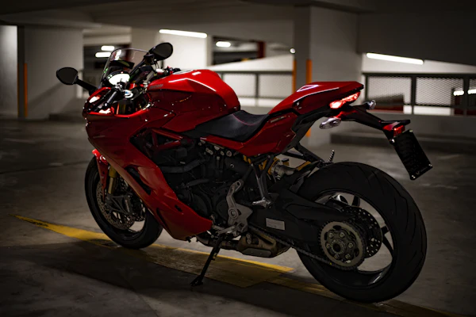

Modell-Ratgeber
Töffs im Check
Stärken, Schwächen und worauf du bei der Besichtigung achten musst. Wähl ein Modell, und Töffcheck nimmt es direkt in den Preis-Check mit.

Dein Töff fehlt?
Im Preis-Check kannst du «Anderes Modell» wählen und die Art des Töffs angeben. Dann bekommst du die typischen Punkte für Naked Bikes, Supersportler, Reiseenduros und Co. Und wenn du ein Modell vermisst: Schreib an lara.schlueter07@gmail.com.